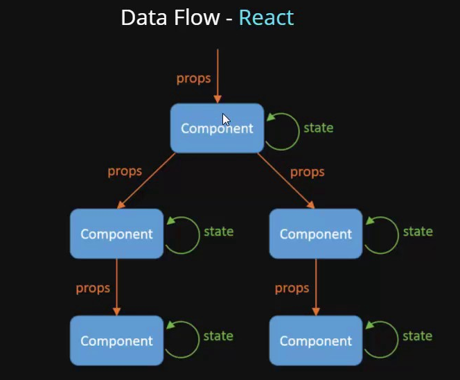

React의 컴포넌트 사이에서 데이터를 주고 받는 방법에 대해서 배운다.
부모가 자식에게 데이터를 전달하는 것은 자식컴포넌트에서 부모컴포넌트의 데이터를 이용한(읽기) 로직을 처리하기 위함이고,
자식 컴포넌트에서 부모컴포넌트로 데이터를 전달하는 것은 부모 state의 값을 변경하기 위함입니다.
state down vs state up
- state down: 부모 -> 자식 데이터 전달
- state up: 자식 -> 부모 데이터 전달

- 부모 컴포넌트에서 자식 컴포넌트에 함수를 데이터로서 전달 후, 해당 함수를 통해 자식 데이터를 부모에게 전달
부모 컴포넌트
function Parent(props) {
// 컴포넌트의 상태값 설정
const [parentText, setParentText] = useState('parent text'); // 상태값이 기본타입인 경우
const [childMessage, setChildMessage] = useState(null); // 상태값이 기본타입인 경우
// 콜백 메서드의 연관 배열에는 사용되는 상태명을 기술.
// 콜백 메서드에서 상태를 한개 사용하면 1개를 적고
// 콜백 메서드에서 상태를 두개 사용하면 2개를 적으시오.
const callbackChildText = useCallback( (text)=> {
console.log(text);
setChildMessage(text);
setParentText(text);
}, [childMessage, parentText] );
// JSX로 화면 만들기
return (
<div>
<Child callbackChildText={callbackChildText} parentText={parentText}></Child>
<br />
{childMessage}
</div>
)
};
자식 컴포넌트
function Child(props) {
// 컴포넌트의 상태값 설정
const [childText, setChildText] = useState('child text'); // 상태값이 기본타입인 경우
function handlerChild() {
props.callbackChildText(childText);
}
// JSX로 화면 만들기
return (
<div>
{props.parentText}
<br />
<button onClick={handlerChild}>button</button>
</div>
)
};
